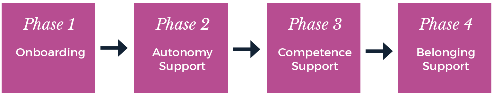

The Mission
In 2014, Omar teamed up with Habitry co-founders Steven M. Ledbetter and Vanessa Naylon to work on our mission of "helping the most people to help the most people" by making products for health coaches.
Once Habitry was running with Habitry iOS, Habitry Professionals, and Essentials of Habit Coaching, coaches began asking for a reasearch review to learn the latest in Motivation Science. It was the most common request that we received since starting the Motivate Summits, so we thought it was worth testing demand with a single issue.
A Learning Design Problem
Thanks to Motivation and Behavior Change Science, we've known how to help people change their behavior for over 40 years.
Yet the practical know-how from this vast evidence base has remained out of the reach of coaching professionals.
Because building coaching competence takes time, resources, and a high-touch, costly approach. So the coaching industry remains filled with quackery, employee disengagement, and turnover.
What if there was a beautiful and practical research review that delighted readers and supported their learning journey?
The Approach
This project was more straight forward than other Habitry projects: research what else was out in the market, then make something 10x better on a ridiculously short time span.
This time we used an Agile UX approach. We gave ourselves 1 month, divided into two sprints, to research, design, write, produce, and sell the initial issue to see if there was enough demand to make more.
Plus, Omar had done this before. He'd recruited a team to publish a research review for HR managers in graduate school. So he brought that experience to bear on The Motivator.
Sprint #1: Research & Vision
Research
At this point, Habitry had developed a Facebook community of over 600 health coaches. This was a treasure trove of data from what we had discussed in the Facebook group over the previous year. Omar did a content analysis of this data to uncover the most common questions, favorite topics, and recurring problems.
Next, we asked them about other research reviews they were reading. Once we had our list of what else was out there, we purchased copies of the reviews they had mentioned and disected what we thought we needed for an MVP.
We then took those ideas back to our community to see if we were in the ballpark on what they wanted.
Vision
Using notes from this process, we developed a list of must-have features we knew we needed to include, but something else jumped out at us when we looked at all the material that health coaches had been consuming: they were all hideous.
It became clear to the team that we only wanted to make this thing if it was beautiful.
This meant an MVP couldn't be a word document or a two-column PDF all in Times New Roman. We wanted to differentiate ourselves by make something that took our customers' breath away. It needed to be a Minimal Beautiful Product.
For Stevo, this presented a larger challenge. He had done the graphic design for dozens of Habitry web, mobile, and small print projects, but he had never designed a magazine. He didn't even know what software one could use to do such a thing. But that had never stopped him before.
And besides, we had a whole 17 days left to do it.
Sprint #2: Build It & Ship It
Making a Magazine in 17 days
We knew we wanted to make something beautiful, but we had also learned what other features our "MBP" would need to have.
| Requirement | Description |
| 1 | Be beautiful (duh) |
| 2 | Be available in PDF and print |
| 3 | Contain an editorial |
| 4 | Contain reviews of resarch with quotes from researchers explaining the applications |
| 5 | Contain as many "practical tips" as possible |
| 6 | Cost no more than $0.40 per page |
Designing
In 2016, Habitry sold Essentials of Habit Coaching as part of Habitry Professionals to Lift the Bar in the UK. It is now the largest, evidence-based behavior change education system in the UK and part of the largest experiment in autonomy-supportive education in the world.
| Requirement | Description |
| 1 | Be beautiful (duh) |
| 2 | Be available in PDF and print |
| 3 | Contain an editorial |
| 4 | Contain reviews of resarch with quotes from researchers explaining the applications |
| 5 | Contain as many "practical tips" as possible |
| 6 | Cost no more than $0.40 per page |
Design Tactics
We aimed to increase Capability, Motivation, and Opportunity by selecting appropriate Behavior Change Techniques.

A Coach's Learning Journey through Essentials
There were four phases to the Essentials program.
The Product

Results
In 2016, Habitry sold Essentials of Habit Coaching as part of Habitry Professionals to Lift the Bar in the UK. It is now the largest, evidence-based behavior change education system in the UK and part of the largest experiment in autonomy-supportive education in the world.